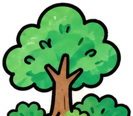

ご本人の意思を尊重する
一人ひとりの希望や強みを大切にし、ご本人に合う支援を考えます。

福岡市を拠点に、人と人とのつながりを大切にしながら、地域での暮らしを支えています。
yoursは福岡市を拠点に、住まいでの生活を支えるグループホームと、日中の活動や働くことを支える就労継続支援B型を運営しています。ご本人やご家族、地域の関係機関とのつながりを大切にし、その人らしい暮らしを一緒に考えます。
ご本人の希望や生活の状況を伺い、地域での暮らしと自立に向けて、必要な支援を一緒に考えます。
一人ひとりの希望や強みを大切にし、ご本人に合う支援を考えます。
権利擁護と虐待防止に関する方針を定め、安心して過ごせる支援を目指します。
ご家族や相談支援専門員、地域の関係機関と連携し、日々の生活を支えます。
支援の方針や運営に関する情報、地域との関わりをご案内します。